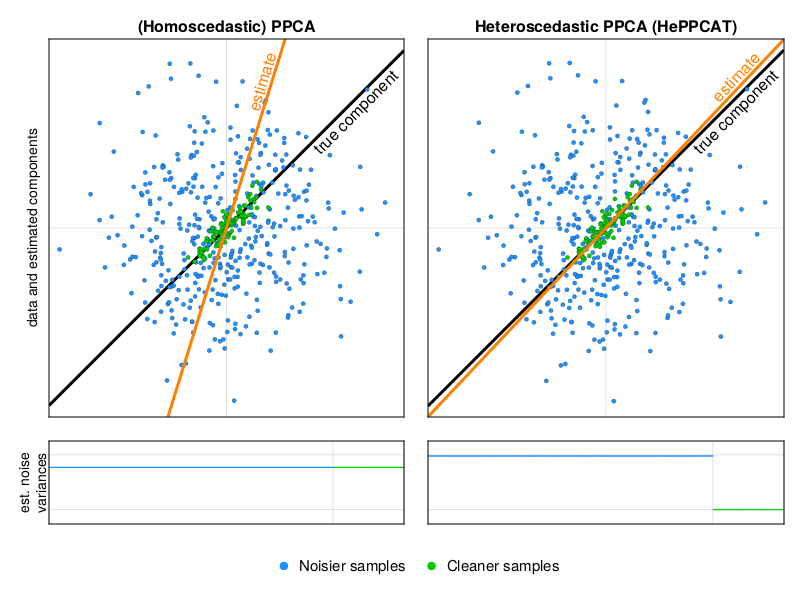

HePPCAT: HEteroscedastic Probabilistic PCA Technique
Documentation for HePPCAT.jl.
👋 This package provides research code and work is ongoing. If you are interested in using it in your own research, I'd love to hear from you and collaborate! Feel free to write: dahong67@wharton.upenn.edu
What is HePPCAT?
HePPCAT is a probabilistic Principal Component Analysis (PCA) technique for data that has samples with heterogeneous quality, i.e., noise that is heteroscedastic across samples.
Illustration: data points with a group of noisier samples (blue points) and a group of cleaner samples (green points).

Homoscedastic PPCA estimates only one noise variance for the whole data, and treats samples as though they were all equally noisy. Recovery of latent components can degrade a lot due to the noisier samples, even though the rest of the samples are relatively clean.
HePPCAT estimates latent components along with separate noise variances for each group. It accounts for heterogeneous quality among the samples and is generally more robust.
It's not just a "cool cat"!
How to cite
Please cite the following paper for this technique:
David Hong, Kyle Gilman, Laura Balzano, Jeffrey A. Fessler. "HePPCAT: Probabilistic PCA for Data with Heteroscedastic Noise", IEEE Transactions on Signal Processing 69:4819-4834, Aug. 2021. https://doi.org/10.1109/TSP.2021.3104979 https://arxiv.org/abs/2101.03468.
In BibTeX form:
@article{hgbf2021heppcat,
title = "{HePPCAT}: Probabilistic {PCA} for Data with Heteroscedastic Noise",
author = "David Hong and Kyle Gilman and Laura Balzano and Jeffrey A. Fessler",
journal = "{IEEE} Transactions on Signal Processing",
year = "2021",
volume = "69",
pages = "4819--4834",
DOI = "10.1109/tsp.2021.3104979",
}